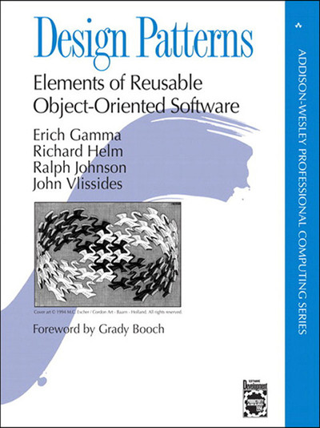

<article>
    <div class="flex-parent">
        <div class="flex-child">
            
        </div>
        <div class="flex-child">
            <p>
                If you are going to pickup a book on design patterns, I would recommend the book Design Patterns:
                Elements of Reusable Object-Oriented Software
                by Erich Gamma, Richard Helm, Ralph Johnson, and John Vlissides. 
            </p>
            <p>
                The book is a classic and is a must read for any software developer. 
                It is a great book to learn about design patterns and how to apply them to your code.
            </p>
            <p>
                Over the coming weeks, I will be posting articles on each of the OOO design patterns highlighted in this book.
            </p>  
            <h4>Creational Patterns</h4>          
            <ul>

            </ul>
            <h4>Structural Patterns</h4>   
            <ul>

            </ul>
            <h4>Behavioral Patterns</h4>   
            <ul>

            </ul>
        </div>
</article>